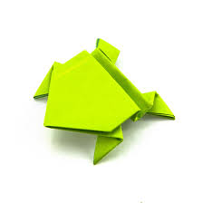
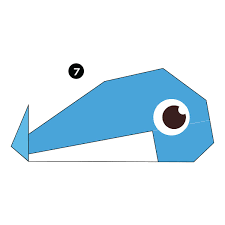

Camel facts
- Camels are called the ships of the desert.
- Camels have long legs to protect themselves from the desert heat.
- Camels have long eyebrows to protect themselves from the sand which could get in their eyes.

Frog facts
- There are over 5,000 species of frog.
- Frogs are amphibians i.e. they live in water as well as on land.
- A group of frogs is called 'an army of frogs'.

Whale facts
- Whales are the largest living creature.
- A whales half brain sleeps at a time.
- The oldest whale died at the age of 110 years.